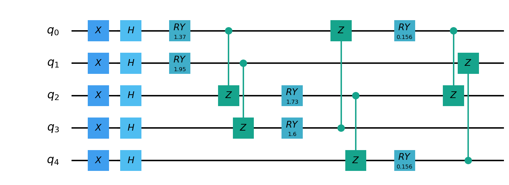
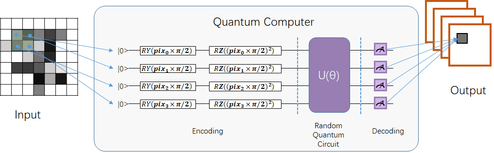
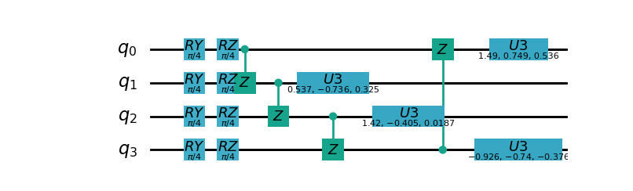

使用pyQPanda3量子机器学习模块¶
Warning
以下接口的量子计算部分使用pyqpanda3 https://qcloud.originqc.com.cn/document/qpanda-3/index.html。
如果您使用了本模块下的QCloud功能,在代码中导入pyqpanda2 或 使用pyvqnet的pyqpanda2相关封装接口会有错误。
量子计算层¶
QuantumLayer¶
如您熟悉pyQPanda3语法,可以使用该接口QuantumLayer,自定义pyqpanda3模拟器进行计算。
- class pyvqnet.qnn.pq3.quantumlayer.QuantumLayer(qprog_with_measure, para_num, diff_method: str = 'parameter_shift', delta: float = 0.01, dtype=None, name='')¶
变分量子层的抽象计算模块。对一个参数化的量子线路使用pyQPanda3进行仿真,得到测量结果。该变分量子层继承了VQNet框架的梯度计算模块,可以使用参数漂移法等计算线路参数的梯度,训练变分量子线路模型或将变分量子线路嵌入混合量子和经典模型。
- Parameters:
qprog_with_measure – 用pyQPand构建的量子线路运行和测量函数。
para_num – int - 参数个数。
diff_method – 求解量子线路参数梯度的方法,“参数位移”或“有限差分”,默认参数偏移。
delta – 有限差分计算梯度时的 delta。
dtype – 参数的数据类型,defaults:None,使用默认数据类型:kfloat32,代表32位浮点数。
name – 这个模块的名字, 默认为””。
- Returns:
一个可以计算量子线路的模块。
Note
qprog_with_measure是pyQPanda中定义的量子线路函数 :https://qcloud.originqc.com.cn/document/qpanda-3/dc/d12/tutorial_quantum_program.html。
此函数必须包含输入和参数两个参数作为函数入参(即使某个参数未实际使用),输出为线路的测量结果或者期望值（需要为np.ndarray或包含数值的列表）,否则无法在QpandaQCircuitVQCLayerLite中正常运行。
量子线路函数 qprog_with_measure (input,param)的使用可参考下面的例子。
input: 输入一维经典数据。如果没有,输入 None。
param: 输入一维的变分量子线路的待训练参数。
Note
该类具有别名 QuantumLayerV2, QpandaQCircuitVQCLayerLite。
Example:
from pyvqnet.qnn.pq3.measure import ProbsMeasure from pyvqnet.qnn.pq3.quantumlayer import QuantumLayer from pyvqnet.tensor import QTensor,ones import pyqpanda3.core as pq def pqctest (input,param): num_of_qubits = 4 m_machine = pq.CPUQVM() qubits = range(num_of_qubits) circuit = pq.QCircuit() circuit<<pq.H(qubits[0]) circuit<<pq.H(qubits[1]) circuit<<pq.H(qubits[2]) circuit<<pq.H(qubits[3]) circuit<<pq.RZ(qubits[0],input[0]) circuit<<pq.RZ(qubits[1],input[1]) circuit<<pq.RZ(qubits[2],input[2]) circuit<<pq.RZ(qubits[3],input[3]) circuit<<pq.CNOT(qubits[0],qubits[1]) circuit<<pq.RZ(qubits[1],param[0]) circuit<<pq.CNOT(qubits[0],qubits[1]) circuit<<pq.CNOT(qubits[1],qubits[2]) circuit<<pq.RZ(qubits[2],param[1]) circuit<<pq.CNOT(qubits[1],qubits[2]) circuit<<pq.CNOT(qubits[2],qubits[3]) circuit<<pq.RZ(qubits[3],param[2]) circuit<<pq.CNOT(qubits[2],qubits[3]) prog = pq.QProg() prog<<circuit rlt_prob = ProbsMeasure(m_machine,prog,[0,2]) return rlt_prob pqc = QuantumLayer(pqctest,3) #classic data as input input = QTensor([[1,2,3,4],[4,2,2,3],[3.0,3,2,2]] ) #forward circuits rlt = pqc(input) print(rlt) grad = ones(rlt.data.shape)*1000 #backward circuits rlt.backward(grad) print(pqc.m_para.grad)
QuantumLayerV3¶
- class pyvqnet.qnn.pq3.quantumlayer.QuantumLayerV3(origin_qprog_func, para_num, qvm_type='cpu', pauli_str_dict=None, shots=1000, initializer=None, dtype=None, name='')¶
它将参数化的量子电路提交给 本地QPanda3全振幅模拟器中计算,并训练线路中的参数。 它支持批量数据并使用参数移位规则来估计参数的梯度。 对于 CRX、CRY、CRZ,此层使用 https://iopscience.iop.org/article/10.1088/1367-2630/ac2cb3 中的公式,其余逻辑门采用默认的参数漂移法计算梯度。
- Parameters:
origin_qprog_func – 由 QPanda 构建的可调用量子电路函数。
para_num – int - 参数数量；参数是一维的。
qvm_type – str - 使用pyqpanda3模拟器类型, cpu 或 gpu 类型,默认 cpu .
pauli_str_dict – dict|list - 表示量子电路中的泡利算子的字典或字典列表。默认值为 None。
shots – int - 测量镜头数。默认值为 1000。
initializer – 参数值的初始化器。默认值为 None。
dtype – 参数的数据类型。默认值为 None,即使用默认数据类型。
name – 模块名称。默认值为空字符串。
- Returns:
返回一个QuantumLayerV3类
Note
origin_qprog_func 是用户使用 pyQPanda3 定义的量子电路函数: https://qcloud.originqc.com.cn/document/qpanda-3/dc/d12/tutorial_quantum_program.html。。
此函数必须包含输入和参数两个参数作为函数入参(即使某个参数未实际使用),输出为pyqpanda3.core.QProg类型数据,否则无法在QuantumLayerV3中正常运行。
origin_qprog_func (input,param )
input:用户定义的数组类输入 1 维经典数据。
param:array_like 输入用户定义的 1 维量子电路参数。
Note
该类具有别名 QpandaQProgVQCLayer 。
Example:
import pyqpanda3.core as pq import pyvqnet from pyvqnet.qnn.pq3.quantumlayer import QuantumLayerV3 def qfun(input, param ): m_qlist = range(3) cubits = range(3) measure_qubits = [0,1, 2] m_prog = pq.QProg() cir = pq.QCircuit(3) cir<<pq.RZ(m_qlist[0], input[0]) cir<<pq.RX(m_qlist[2], input[2]) qcir = pq.RX(m_qlist[1], param[1]).add_control(m_qlist[0]) cir<<qcir qcir = pq.RY(m_qlist[0], param[2]).add_control(m_qlist[1]) cir<<qcir cir<<pq.RY(m_qlist[0], input[1]) qcir = pq.RZ(m_qlist[0], param[3]).add_control(m_qlist[1]) cir<<qcir m_prog<<cir for idx, ele in enumerate(measure_qubits): m_prog << pq.measure(m_qlist[ele], cubits[idx]) # pylint: disable=expression-not-assigned return m_prog from pyvqnet.utils.initializer import ones l = QuantumLayerV3(qfun, 4, "cpu", pauli_str_dict=None, shots=1000, initializer=ones, name="") x = pyvqnet.tensor.QTensor( [[2.56, 1.2,-3]], requires_grad=True) y = l(x) y.backward() print(l.m_para.grad.to_numpy()) print(x.grad.to_numpy())
QuantumBatchAsyncQcloudLayer¶
当您安装最新版本pyqpanda3,可以使用本接口定义一个变分线路,并提交到originqc的真实芯片上运行。
- class pyvqnet.qnn.pq3.quantumlayer.QuantumBatchAsyncQcloudLayer(origin_qprog_func, qcloud_token, para_num, pauli_str_dict=None, shots=1000, initializer=None, dtype=None, name='', diff_method='parameter_shift', submit_kwargs={}, query_kwargs={})¶
使用 pyqpanda3 QCLOUD 的 originqc 真实芯片的抽象计算模块。 它提交参数化量子电路到真实芯片并获得测量结果。 如果 diff_method == “random_coordinate_descent” ,该层将随机选择单个参数来计算梯度,其他参数将保持为零。参考:https://arxiv.org/abs/2311.00088
Note
qcloud_token 为您到 https://qcloud.originqc.com.cn/ 中申请的api token。 origin_qprog_func 需要返回pypqanda3.core.QProg类型的数据,如果没有设置pauli_str_dict,需要保证该QProg中已经插入了measure。 origin_qprog_func 的形式必须按照如下:
origin_qprog_func(input,param)
input: 输入1~2维经典数据,二维的情况下,第一个维度为批处理大小。
param: 输入一维的变分量子线路的待训练参数。
- Parameters:
origin_qprog_func – QPanda 构建的变分量子电路函数,必须返回QProg。
qcloud_token – str - 量子机的类型或用于执行的云令牌。
para_num – int - 参数数量,参数是大小为[para_num]的QTensor。
pauli_str_dict – dict|list - 表示量子电路中泡利运算符的字典或字典列表。 默认为“无”,则进行测量操作,如果输入泡利算符的字典,则会计算单个期望或者多个期望。
shot – int - 测量次数。 默认值为 1000。
initializer – 参数值的初始化器。 默认为“无”,使用0~2*pi正态分布。
dtype – 参数的数据类型。 默认值为 None,即使用默认数据类型pyvqnet.kfloat32。
name – 模块的名称。 默认为空字符串。
diff_method – 梯度计算的微分方法。 默认为“parameter_shift”,”random_coordinate_descent”。
submit_kwargs – 用于提交量子电路的附加关键字参数,默认:{“chip_id”:”origin_wukong”,”is_amend”:True,”is_mapping”:True,”is_optimization”:True,”compile_level”:3,”default_task_group_size”:200,”test_qcloud_fake”:False},当设置test_qcloud_fake为True则本地CPUQVM模拟。
query_kwargs – 用于查询量子结果的附加关键字参数,默认:{“timeout”:2,”print_query_info”:True,”sub_circuits_split_size”:1}。
- Returns:
一个可以计算量子电路的模块。
Example:
import pyqpanda3.core as pq import pyvqnet from pyvqnet.qnn.pq3.quantumlayer import QuantumBatchAsyncQcloudLayer def qfun(input,param): measure_qubits = [0,2] m_qlist = range(6) cir = pq.QCircuit(6) cir << (pq.RZ(m_qlist[0],input[0])) cir << pq.CNOT(m_qlist[0],m_qlist[1]) cir << pq.RY(m_qlist[1],param[0]) cir << pq.CNOT(m_qlist[0],m_qlist[2]) cir << pq.RZ(m_qlist[1],input[1]) cir << pq.RY(m_qlist[2],param[1]) cir << pq.H(m_qlist[2]) m_prog = pq.QProg(cir) for idx, ele in enumerate(measure_qubits): m_prog << pq.measure(m_qlist[ele], m_qlist[idx]) # pylint: disable=expression-not-assigned return m_prog l = QuantumBatchAsyncQcloudLayer(qfun, "3047DE8A59764BEDAC9C3282093B16AF1", 2, pauli_str_dict=None, shots = 1000, initializer=None, dtype=None, name="", diff_method="parameter_shift", submit_kwargs={"test_qcloud_fake":True}, query_kwargs={}) x = pyvqnet.tensor.QTensor([[0.56,1.2],[0.56,1.2],[0.56,1.2],[0.56,1.2],[0.56,1.2]],requires_grad= True) y = l(x) print(y) y.backward() print(l.m_para.grad) print(x.grad) def qfun2(input,param ): m_qlist = range(6) cir = pq.QCircuit(6) cir<<pq.RZ(m_qlist[0],input[0]) cir<<pq.CNOT(m_qlist[0],m_qlist[1]) cir<<pq.RY(m_qlist[1],param[0]) cir<<pq.CNOT(m_qlist[0],m_qlist[2]) cir<<pq.RZ(m_qlist[1],input[1]) cir<<pq.RY(m_qlist[2],param[1]) cir<<pq.H(m_qlist[2]) m_prog = pq.QProg(cir) return m_prog l = QuantumBatchAsyncQcloudLayer(qfun2, "3047DE8A59764BEDAC9C3282093B16AF", 2, pauli_str_dict={'Z0 X1':10,'':-0.5,'Y2':-0.543,"":3333}, shots = 1000, initializer=None, dtype=None, name="", diff_method="parameter_shift", submit_kwargs={"test_qcloud_fake":True}, query_kwargs={}) x = pyvqnet.tensor.QTensor([[0.56,1.2],[0.56,1.2],[0.56,1.2],[0.56,1.2]],requires_grad= True) y = l(x) print(y) y.backward() print(l.m_para.grad) print(x.grad)
grad¶
- pyvqnet.qnn.pq3.quantumlayer.grad(quantum_prog_func, input_params, *args)¶
grad 函数提供了一种对用户设计的含参量子线路参数的梯度进行计算的接口。 用户可按照如下例子,使用pyqpanda设计线路运行函数
quantum_prog_func,并作为参数送入grad函数。 grad函数的第二个参数则是想要计算量子逻辑门参数梯度的坐标。 返回值的形状为 [num of parameters,num of output]。- Parameters:
quantum_prog_func – pyqpanda设计的量子线路运行函数。
input_params – 待求梯度的参数。
*args – 其他输入到quantum_prog_func函数的参数。
- Returns:
参数的梯度
Examples:
from pyvqnet.qnn.pq3 import grad, ProbsMeasure import pyqpanda3.core as pq def pqctest(param): machine = pq.CPUQVM() qubits = range(2) circuit = pq.QCircuit(2) circuit<<pq.RX(qubits[0], param[0]) circuit<<pq.RY(qubits[1], param[1]) circuit<<pq.CNOT(qubits[0], qubits[1]) circuit<<pq.RX(qubits[1], param[2]) prog = pq.QProg() prog<<circuit EXP = ProbsMeasure(machine,prog,[1]) return EXP g = grad(pqctest, [0.1,0.2, 0.3]) print(g) exp = pqctest([0.1,0.2, 0.3]) print(exp)
HybirdVQCQpanda3QVMLayer¶
- class pyvqnet.qnn.pq3.hybird_vqc_qpanda.HybirdVQCQpanda3QVMLayer(vqc_module: Module, qcloud_token: str, pauli_str_dict: List[Dict] | Dict | None = None, shots: int = 1000, dtype: int | None = None, name: str = '', submit_kwargs: Dict = {}, query_kwargs: Dict = {})¶
混合 vqc 和 qpanda3 模拟计算。该层将用户 forward 函数定义的VQNet编写的量子线路计算转化为QPanda OriginIR,在QPanda3本地虚拟机或者云端服务上进行前向运行,并在基于自动微分计算线路参数梯度,降低了使用参数漂移法计算的时间复杂度。 其中
vqc_module为用户自定义的量子变分线路模型,其中的QMachine设置save_ir=True。 有别名HybirdVQCQpandaQVMLayer。- Parameters:
vqc_module – 带有 forward() 的 vqc_module。
qcloud_token – str - 量子机器的类型或用于执行的云令牌。
pauli_str_dict – dict|list - 表示量子电路中泡利算子的字典或字典列表。默认值为 None。
shots – int - 量子线路测量次数。默认值为 1000。
name – 模块名称。默认值为空字符串。
submit_kwargs – 提交量子电路的附加关键字参数,默认值: {“chip_id”:”origin_wukong”, “is_amend”:True,”is_mapping”:True, “is_optimization”:True, “default_task_group_size”:200, “test_qcloud_fake”:True}。
query_kwargs – 查询量子结果的附加关键字参数,默认值:{“timeout”:2,”print_query_info”:True,”sub_circuits_split_size”:1}。
- Returns:
可以计算量子电路的模块。
Note
pauli_str_dict 不能为 None,并且应与 vqc_module 测量函数中的 obs 相同。 vqc_module 应具有 QMachine 类型的属性,QMachine 应设置 save_ir=True
Example:
from pyvqnet.qnn.vqc import * from pyvqnet.qnn.pq3 import HybirdVQCQpanda3QVMLayer import pyvqnet from pyvqnet.nn import Module,Linear class Hybird(Module): def __init__(self): self.cl1 = Linear(3,3) self.ql = QModel(num_wires=6, dtype=pyvqnet.kcomplex64) self.cl2 = Linear(1,2) def forward(self,x): x = self.cl1(x) x = self.ql(x) x = self.cl2(x) return x class QModel(Module): def __init__(self, num_wires, dtype,grad_mode=""): super(QModel, self).__init__() self._num_wires = num_wires self._dtype = dtype self.qm = QMachine(num_wires, dtype=dtype,grad_mode=grad_mode,save_ir=True) self.rx_layer = RX(has_params=True, trainable=False, wires=0) self.ry_layer = RY(has_params=True, trainable=False, wires=1) self.rz_layer = RZ(has_params=True, trainable=False, wires=1) self.u1 = U1(has_params=True,trainable=True,wires=[2]) self.u2 = U2(has_params=True,trainable=True,wires=[3]) self.u3 = U3(has_params=True,trainable=True,wires=[1]) self.i = I(wires=[3]) self.s = S(wires=[3]) self.x1 = X1(wires=[3]) self.y1 = Y1(wires=[3]) self.z1 = Z1(wires=[3]) self.x = PauliX(wires=[3]) self.y = PauliY(wires=[3]) self.z = PauliZ(wires=[3]) self.swap = SWAP(wires=[2,3]) self.cz = CZ(wires=[2,3]) self.cr = CR(has_params=True,trainable=True,wires=[2,3]) self.rxx = RXX(has_params=True,trainable=True,wires=[2,3]) self.rzz = RYY(has_params=True,trainable=True,wires=[2,3]) self.ryy = RZZ(has_params=True,trainable=True,wires=[2,3]) self.rzx = RZX(has_params=True,trainable=False, wires=[2,3]) self.toffoli = Toffoli(wires=[2,3,4],use_dagger=True) self.h =Hadamard(wires=[1]) self.iSWAP = iSWAP(False,False,wires=[0,2]) self.tlayer = T(wires=1) self.cnot = CNOT(wires=[0, 1]) self.measure = MeasureAll(obs={'Z0':2,'Y3':3} ) def forward(self, x, *args, **kwargs): self.qm.reset_states(x.shape[0]) self.i(q_machine=self.qm) self.s(q_machine=self.qm) self.swap(q_machine=self.qm) self.cz(q_machine=self.qm) self.x(q_machine=self.qm) self.x1(q_machine=self.qm) self.y(q_machine=self.qm) self.y1(q_machine=self.qm) self.z(q_machine=self.qm) self.z1(q_machine=self.qm) self.ryy(q_machine=self.qm) self.rxx(q_machine=self.qm) self.rzz(q_machine=self.qm) self.rzx(q_machine=self.qm,params = x[:,[1]]) self.cr(q_machine=self.qm) self.u1(q_machine=self.qm) self.u2(q_machine=self.qm) self.u3(q_machine=self.qm) self.rx_layer(params = x[:,[0]], q_machine=self.qm) self.cnot(q_machine=self.qm) self.h(q_machine=self.qm) self.iSWAP(q_machine=self.qm) self.ry_layer(params = x[:,[1]], q_machine=self.qm) self.tlayer(q_machine=self.qm) self.rz_layer(params = x[:,[2]], q_machine=self.qm) self.toffoli(q_machine=self.qm) rlt = self.measure(q_machine=self.qm) return rlt input_x = tensor.QTensor([[0.1, 0.2, 0.3]]) input_x = tensor.broadcast_to(input_x,[2,3]) input_x.requires_grad = True qunatum_model = QModel(num_wires=6, dtype=pyvqnet.kcomplex64) l = HybirdVQCQpanda3QVMLayer(qunatum_model, "3047DE8A59764BEDAC9C3282093B16AF1", pauli_str_dict={'Z0':2,'Y3':3}, shots = 1000, name="", submit_kwargs={"test_qcloud_fake":True}, query_kwargs={}) y = l(input_x) print(y) y.backward() print(input_x.grad)
QLinear¶
QLinear 实现了一种量子全连接算法。首先将数据编码到量子态,然后通过量子线路进行演化操作和测量得到最终的全连接结果。
- class pyvqnet.qnn.qlinear.QLinear(input_channels, output_channels, machine: str = "CPU"))¶
量子全连接模块。全连接模块的输入为形状（输入通道、输出通道）。请注意,该层不带变分量子参数。
- Parameters:
input_channels – int - 输入通道数。
output_channels – int - 输出通道数。
machine – str - 使用的虚拟机,默认使用CPU模拟。
- Returns:
量子全连接层。
Exmaple:
from pyvqnet.tensor import QTensor from pyvqnet.qnn.qlinear import QLinear params = [[0.37454012, 0.95071431, 0.73199394, 0.59865848, 0.15601864, 0.15599452], [1.37454012, 0.95071431, 0.73199394, 0.59865848, 0.15601864, 0.15599452], [1.37454012, 1.95071431, 0.73199394, 0.59865848, 0.15601864, 0.15599452], [1.37454012, 1.95071431, 1.73199394, 1.59865848, 0.15601864, 0.15599452]] m = QLinear(6, 2) input = QTensor(params, requires_grad=True) output = m(input) output.backward() print(output) #[ #[0.0568473, 0.1264389], #[0.1524036, 0.1264389], #[0.1524036, 0.1442845], #[0.1524036, 0.1442845] #]
Qconv¶
Qconv是一种量子卷积算法接口。 量子卷积操作采用量子线路对经典数据进行卷积操作,其无需计算乘法和加法操作,只需将数据编码到量子态,然后通过量子线路进行演化操作和测量得到最终的卷积结果。 根据卷积核的范围中的输入数据数量申请相同数量的量子比特,然后构建量子线路进行计算。
其量子线路由每个qubit上首先插入 \(RY\) , \(RZ\) 门进行编码,接着在任意两个qubit上使用 \(Z\) 以及 \(U3\) 进行信息纠缠和交换。下图为4qubits的例子
- class pyvqnet.qnn.qcnn.qconv.QConv(input_channels, output_channels, quantum_number, stride=(1, 1), padding=(0, 0), kernel_initializer=normal, machine: str = 'CPU', dtype=None, name='')¶
量子卷积模块。用量子线路取代Conv2D内核,conv模块的输入为形状（批次大小、输入通道、高度、宽度） Samuel et al. (2020) 。
- Parameters:
input_channels – int - 输入通道数。
output_channels – int - 输出通道数。
quantum_number – int - 单个内核的大小。
stride – tuple - 步长,默认为（1,1）。
padding – tuple - 填充,默认为（0,0）。
kernel_initializer – callable - 默认为正态分布。
machine – str - 使用的虚拟机,默认使用CPU模拟。
dtype – 参数的数据类型,defaults:None,使用默认数据类型:kfloat32,代表32位浮点数。
name – 这个模块的名字, 默认为””。
- Returns:
量子卷积层。
Example:
from pyvqnet.tensor import tensor from pyvqnet.qnn.qcnn.qconv import QConv x = tensor.ones([1,3,4,4]) layer = QConv(input_channels=3, output_channels=2, quantum_number=4, stride=(2, 2)) y = layer(x) print(y) # [ # [[[-0.0889078, -0.0889078], # [-0.0889078, -0.0889078]], # [[0.7992646, 0.7992646], # [0.7992646, 0.7992646]]] # ]
量子逻辑门¶
处理量子比特的方式就是量子逻辑门。 使用量子逻辑门,我们有意识的使量子态发生演化。量子逻辑门是构成量子算法的基础。
基本量子逻辑门¶
在VQNet中,我们使用本源量子自研的 pyqpanda3 的各个逻辑门搭建量子线路,进行量子模拟。 当前pyQPanda支持的逻辑门可参考pyQPanda3 量子逻辑门 部分的定义。 此外VQNet还封装了部分在量子机器学习中常用的量子逻辑门组合:
BasicEmbeddingCircuit¶
- pyvqnet.qnn.pq3.template.BasicEmbeddingCircuit(input_feat, qlist)¶
将n个二进制特征编码为n个量子比特的基态。
例如, 对于
features=([0, 1, 1]), 在量子系统下其基态为 \(|011 \rangle\)。- Parameters:
input_feat –
(n)大小的二进制输入。qlist – 构建该模板线路量子比特。
- Returns:
量子线路。
Example:
from pyvqnet.qnn.pq3.template import BasicEmbeddingCircuit import pyqpanda3.core as pq from pyvqnet import tensor input_feat = tensor.QTensor([1,1,0]) qlist = range(3) circuit = BasicEmbeddingCircuit(input_feat,qlist) print(circuit)
AngleEmbeddingCircuit¶
- pyvqnet.qnn.pq3.template.AngleEmbeddingCircuit(input_feat, qubits, rotation: str = 'X')¶
将 \(N\) 特征编码到 \(n\) 量子比特的旋转角度中, 其中 \(N \leq n\)。
旋转可以选择为 : ‘X’ , ‘Y’ , ‘Z’, 如
rotation的参数定义为:rotation='X'将特征用作RX旋转的角度。rotation='Y'将特征用作RY旋转的角度。rotation='Z'将特征用作RZ旋转的角度。
features的长度必须小于或等于量子比特的数量。如果features中的长度少于量子比特,则线路不应用剩余的旋转门。- Parameters:
input_feat – 表示参数的numpy数组。
qubits – 量子比特索引。
rotation – 使用什么旋转,默认为“X”。
- Returns:
量子线路。
Example:
from pyvqnet.qnn.pq3.template import AngleEmbeddingCircuit import numpy as np m_qlist = range(2) input_feat = np.array([2.2, 1]) C = AngleEmbeddingCircuit(input_feat,m_qlist,'X') print(C) C = AngleEmbeddingCircuit(input_feat,m_qlist,'Y') print(C) C = AngleEmbeddingCircuit(input_feat,m_qlist,'Z') print(C)
IQPEmbeddingCircuits¶
- pyvqnet.qnn.pq3.template.IQPEmbeddingCircuits(input_feat, qubits, rep: int = 1)¶
使用IQP线路的对角门将 \(n\) 特征编码为 \(n\) 量子比特。
编码是由 Havlicek et al. (2018) 提出。
通过指定
n_repeats,可以重复基本IQP线路。- Parameters:
input_feat – 表示参数的numpy数组。
qubits – 量子比特索引列表。
rep – 重复量子线路块,默认次数1。
- Returns:
量子线路。
Example:
import numpy as np from pyvqnet.qnn.pq3.template import IQPEmbeddingCircuits input_feat = np.arange(1,100) qlist = range(3) circuit = IQPEmbeddingCircuits(input_feat,qlist,rep = 3) print(circuit)
RotCircuit¶
- pyvqnet.qnn.pq3.template.RotCircuit(para, qubits)¶
任意单量子比特旋转。qlist的数量应该是1,参数的数量应该是3。
\[\begin{split}R(\phi,\theta,\omega) = RZ(\omega)RY(\theta)RZ(\phi)= \begin{bmatrix} e^{-i(\phi+\omega)/2}\cos(\theta/2) & -e^{i(\phi-\omega)/2}\sin(\theta/2) \\ e^{-i(\phi-\omega)/2}\sin(\theta/2) & e^{i(\phi+\omega)/2}\cos(\theta/2) \end{bmatrix}.\end{split}\]- Parameters:
para – 表示参数 \([\phi, \theta, \omega]\) 的numpy数组。
qubits – 量子比特索引,只接受单个量子比特。
- Returns:
量子线路。
Example:
from pyvqnet.qnn.pq3.template import RotCircuit import pyqpanda3.core as pq from pyvqnet import tensor m_qlist = 1 param =tensor.QTensor([3,4,5]) c = RotCircuit(param,m_qlist) print(c)
CRotCircuit¶
- pyvqnet.qnn.pq3.template.CRotCircuit(para, control_qubits, rot_qubits)¶
受控Rot操作符。
\[\begin{split}CR(\phi, \theta, \omega) = \begin{bmatrix} 1 & 0 & 0 & 0 \\ 0 & 1 & 0 & 0\\ 0 & 0 & e^{-i(\phi+\omega)/2}\cos(\theta/2) & -e^{i(\phi-\omega)/2}\sin(\theta/2)\\ 0 & 0 & e^{-i(\phi-\omega)/2}\sin(\theta/2) & e^{i(\phi+\omega)/2}\cos(\theta/2) \end{bmatrix}.\end{split}\]- Parameters:
para – 表示参数 \([\phi, \theta, \omega]\) 的numpy数组。
control_qubits – 量子比特索引,量子比特的数量应为1。
rot_qubits – Rot量子比特索引,量子比特的数量应为1。
- Returns:
量子线路。
Example:
from pyvqnet.qnn.pq3.template import CRotCircuit import pyqpanda3.core as pq import numpy as np m_qlist = range(1) control_qlist = [1] param = np.array([3,4,5]) cir = CRotCircuit(param,control_qlist,m_qlist) print(cir)
CSWAPcircuit¶
- pyvqnet.qnn.pq3.template.CSWAPcircuit(qubits)¶
受控SWAP线路。
\[\begin{split}CSWAP = \begin{bmatrix} 1 & 0 & 0 & 0 & 0 & 0 & 0 & 0 \\ 0 & 1 & 0 & 0 & 0 & 0 & 0 & 0 \\ 0 & 0 & 1 & 0 & 0 & 0 & 0 & 0 \\ 0 & 0 & 0 & 1 & 0 & 0 & 0 & 0 \\ 0 & 0 & 0 & 0 & 1 & 0 & 0 & 0 \\ 0 & 0 & 0 & 0 & 0 & 0 & 1 & 0 \\ 0 & 0 & 0 & 0 & 0 & 1 & 0 & 0 \\ 0 & 0 & 0 & 0 & 0 & 0 & 0 & 1 \end{bmatrix}.\end{split}\]Note
提供的第一个量子比特对应于 control qubit 。
- Parameters:
qubits – 量子比特索引列表第一个量子比特是控制量子比特。qlist的长度必须为3。
- Returns:
量子线路。
Example:
from pyvqnet.qnn.pq3 import CSWAPcircuit import pyqpanda3.core as pq m_machine = pq.CPUQVM() m_qlist = range(3) c =CSWAPcircuit([m_qlist[1],m_qlist[2],m_qlist[0]]) print(c)
Controlled_Hadamard¶
- pyvqnet.qnn.pq3.template.Controlled_Hadamard(qubits)¶
受控Hadamard逻辑门
\[\begin{split}CH = \begin{bmatrix} 1 & 0 & 0 & 0 \\ 0 & 1 & 0 & 0 \\ 0 & 0 & \frac{1}{\sqrt{2}} & \frac{1}{\sqrt{2}} \\ 0 & 0 & \frac{1}{\sqrt{2}} & -\frac{1}{\sqrt{2}} \end{bmatrix}.\end{split}\]- Parameters:
qubits – 量子比特索引。
Examples:
import pyqpanda3.core as pq machine = pq.CPUQVM() qubits =range(2) from pyvqnet.qnn.pq3 import Controlled_Hadamard cir = Controlled_Hadamard(qubits) print(cir)
CCZ¶
- pyvqnet.qnn.pq3.template.CCZ(qubits)¶
受控-受控-Z (controlled-controlled-Z) 逻辑门。
\[\begin{split}CCZ = \begin{pmatrix} 1 & 0 & 0 & 0 & 0 & 0 & 0 & 0\\ 0 & 1 & 0 & 0 & 0 & 0 & 0 & 0\\ 0 & 0 & 1 & 0 & 0 & 0 & 0 & 0\\ 0 & 0 & 0 & 1 & 0 & 0 & 0 & 0\\ 0 & 0 & 0 & 0 & 1 & 0 & 0 & 0\\ 0 & 0 & 0 & 0 & 0 & 1 & 0 & 0\\ 0 & 0 & 0 & 0 & 0 & 0 & 1 & 0\\ 0 & 0 & 0 & 0 & 0 & 0 & 0 & -1 \end{pmatrix}\end{split}\]- Parameters:
qubits – 量子比特索引。
- Returns:
pyqpanda QCircuit
Example:
import pyqpanda3.core as pq machine = pq.CPUQVM() qubits = range(3) from pyvqnet.qnn.pq3 import CCZ cir = CCZ(qubits)
FermionicSingleExcitation¶
- pyvqnet.qnn.pq3.template.FermionicSingleExcitation(weight, wires, qubits)¶
对泡利矩阵的张量积求幂的耦合簇单激励算子。矩阵形式下式给出:
\[\hat{U}_{pr}(\theta) = \mathrm{exp} \{ \theta_{pr} (\hat{c}_p^\dagger \hat{c}_r -\mathrm{H.c.}) \},\]- Parameters:
weight – 量子比特 p 上的变参.
wires – 表示区间[r, p]中的量子比特索引子集。最小长度必须为2。第一索引值被解释为r,最后一个索引值被解释为p。 中间的索引被CNOT门作用,以计算量子位集的奇偶校验。
qubits – 量子比特索引。
- Returns:
pyqpanda QCircuit
Examples:
from pyvqnet.qnn.pq3 import FermionicSingleExcitation, expval weight = 0.5 import pyqpanda3.core as pq machine = pq.CPUQVM() qlists = range(3) cir = FermionicSingleExcitation(weight, [1, 0, 2], qlists)
FermionicDoubleExcitation¶
- pyvqnet.qnn.pq3.template.FermionicDoubleExcitation(weight, wires1, wires2, qubits)¶
对泡利矩阵的张量积求幂的耦合聚类双激励算子,矩阵形式由下式给出:
\[\hat{U}_{pqrs}(\theta) = \mathrm{exp} \{ \theta (\hat{c}_p^\dagger \hat{c}_q^\dagger \hat{c}_r \hat{c}_s - \mathrm{H.c.}) \},\]其中 \(\hat{c}\) 和 \(\hat{c}^\dagger\) 是费米子湮灭和 创建运算符和索引 \(r, s\) 和 \(p, q\) 在占用的和 分别为空分子轨道。 使用 Jordan-Wigner 变换 上面定义的费米子算子可以写成 根据 Pauli 矩阵(有关更多详细信息,请参见 arXiv:1805.04340)
\[\begin{split}\hat{U}_{pqrs}(\theta) = \mathrm{exp} \Big\{ \frac{i\theta}{8} \bigotimes_{b=s+1}^{r-1} \hat{Z}_b \bigotimes_{a=q+1}^{p-1} \hat{Z}_a (\hat{X}_s \hat{X}_r \hat{Y}_q \hat{X}_p + \hat{Y}_s \hat{X}_r \hat{Y}_q \hat{Y}_p +\\ \hat{X}_s \hat{Y}_r \hat{Y}_q \hat{Y}_p + \hat{X}_s \hat{X}_r \hat{X}_q \hat{Y}_p - \mathrm{H.c.} ) \Big\}\end{split}\]- Parameters:
weight – 可变参数
wires1 – 代表的量子比特的索引列表区间 [s, r] 中占据量子比特的子集。第一个索引被解释为 s,最后一索引被解释为 r。 CNOT 门对中间的索引进行操作,以计算一组量子位的奇偶性。
wires2 – 代表的量子比特的索引列表区间 [q, p] 中占据量子比特的子集。第一根索引被解释为 q,最后一索引被解释为 p。 CNOT 门对中间的索引进行操作,以计算一组量子位的奇偶性。
qubits – 量子比特索引。
- Returns:
pyqpanda QCircuit
Examples:
import pyqpanda3.core as pq from pyvqnet.qnn.pq3 import FermionicDoubleExcitation, expval machine = pq.CPUQVM() qlists = range(5) weight = 1.5 cir = FermionicDoubleExcitation(weight, wires1=[0, 1], wires2=[2, 3, 4], qubits=qlists)
UCCSD¶
- pyvqnet.qnn.pq3.template.UCCSD(weights, wires, s_wires, d_wires, init_state, qubits)¶
实现酉耦合簇单激发和双激发拟设(UCCSD)。UCCSD 是 VQE 拟设,通常用于运行量子化学模拟。
在一阶 Trotter 近似内,UCCSD 酉函数由下式给出:
\[\hat{U}(\vec{\theta}) = \prod_{p > r} \mathrm{exp} \Big\{\theta_{pr} (\hat{c}_p^\dagger \hat{c}_r-\mathrm{H.c.}) \Big\} \prod_{p > q > r > s} \mathrm{exp} \Big\{\theta_{pqrs} (\hat{c}_p^\dagger \hat{c}_q^\dagger \hat{c}_r \hat{c}_s-\mathrm{H.c.}) \Big\}\]其中 \(\hat{c}\) 和 \(\hat{c}^\dagger\) 是费米子湮灭和 创建运算符和索引 \(r, s\) 和 \(p, q\) 在占用的和 分别为空分子轨道。(更多细节见 arXiv:1805.04340):
- Parameters:
weights – 包含参数的大小
(len(s_wires)+ len(d_wires))张量 \(\theta_{pr}\) 和 \(\theta_{pqrs}\) 输入 Z 旋转FermionicSingleExcitation和FermionicDoubleExcitation。wires – 模板作用的量子比特索引
s_wires – 包含量子比特索引的列表序列
[r,...,p]由单一激发产生 \(\vert r, p \rangle = \hat{c}_p^\dagger \hat{c}_r \vert \mathrm{HF} \rangle\), 其中 \(\vert \mathrm{HF} \rangle\) 表示 Hartee-Fock 参考态。d_wires – 列表序列,每个列表包含两个列表 指定索引
[s, ...,r]和[q,..., p]定义双激励 \(\vert s, r, q, p \rangle = \hat{c}_p^\dagger \hat{c}_q^\dagger \hat{c}_r\hat{c}_s \vert \mathrm{HF} \rangle\) 。init_state – 长度
len(wires)occupation-number vector 表示 高频状态。init_state在量子比特初始化状态。qubits – 量子比特索引。
Examples:
import pyqpanda3.core as pq from pyvqnet.tensor import tensor from pyvqnet.qnn.pq3 import UCCSD, expval machine = pq.CPUQVM() qlists = range(6) weight = tensor.zeros([8]) cir = UCCSD(weight,wires = [0,1,2,3,4,5,6], s_wires=[[0, 1, 2], [0, 1, 2, 3, 4], [1, 2, 3], [1, 2, 3, 4, 5]], d_wires=[[[0, 1], [2, 3]], [[0, 1], [2, 3, 4, 5]], [[0, 1], [3, 4]], [[0, 1], [4, 5]]], init_state=[1, 1, 0, 0, 0, 0], qubits=qlists)
QuantumPoolingCircuit¶
- pyvqnet.qnn.pq3.template.QuantumPoolingCircuit(sources_wires, sinks_wires, params, qubits)¶
对数据进行降采样的量子电路。
为了减少电路中的量子位数量,首先在系统中创建成对的量子位。在最初配对所有量子位之后,将广义2量子位酉元应用于每一对量子位上。并在应用这两个量子位酉元之后,在神经网络的其余部分忽略每对量子位中的一个量子位。
- Parameters:
sources_wires – 将被忽略的源量子位索引。
sinks_wires – 将保留的目标量子位索引。
params – 输入参数。
qubits – 量子比特索引。
- Returns:
pyqpanda QCircuit
Examples:
from pyvqnet.qnn.pq3.template import QuantumPoolingCircuit import pyqpanda3.core as pq from pyvqnet import tensor qlists = range(4) p = tensor.full([6], 0.35) cir = QuantumPoolingCircuit([0, 1], [2, 3], p, qlists) print(cir)
常用量子线路组合¶
VQNet提供了量子机器学习研究中常用的一些量子线路
HardwareEfficientAnsatz¶
- class pyvqnet.qnn.pq3.ansatz.HardwareEfficientAnsatz(qubits, single_rot_gate_list, entangle_gate='CNOT', entangle_rules='linear', depth=1)¶
论文介绍的Hardware Efficient Ansatz的实现: Hardware-efficient Variational Quantum Eigensolver for Small Molecules 。
- Parameters:
qubits – 量子比特索引。
single_rot_gate_list – 单个量子位旋转门列表由一个或多个作用于每个量子位的旋转门构成。目前支持 Rx、Ry、Rz。
entangle_gate – 非参数化纠缠门。支持CNOT、CZ。默认: CNOT。
entangle_rules – 电路中如何使用纠缠门。
linear意味着纠缠门将作用于每个相邻的量子位。all意味着纠缠门将作用于任何两个 qbuits。 默认值:linear。depth – ansatz 的深度,默认:1。
Example:
import pyqpanda3.core as pq from pyvqnet.tensor import QTensor,tensor from pyvqnet.qnn.pq3.ansatz import HardwareEfficientAnsatz machine = pq.CPUQVM() qlist = range(4) c = HardwareEfficientAnsatz(qlist,["rx", "RY", "rz"], entangle_gate="cnot", entangle_rules="linear", depth=1) w = tensor.ones([c.get_para_num()]) cir = c.create_ansatz(w) print(cir)
BasicEntanglerTemplate¶
- class pyvqnet.qnn.pq3.template.BasicEntanglerTemplate(weights=None, num_qubits=1, rotation=pyqpanda.RX)¶
由每个量子位上的单参数单量子位旋转组成的层,后跟一个闭合链或环组合的多个CNOT 门。
CNOT 门环将每个量子位与其邻居连接起来,最后一个量子位被认为是第一个量子位的邻居。
层数 \(L\) 由参数
weights的第一个维度决定。- Parameters:
weights – 形状的权重张量 (L, len(qubits))。 每个权重都用作量子含参门中的参数。默认值为:
None,则使用 (1,1) 正态分布随机数作为权重。num_qubits – 量子比特数,默认为1。
rotation – 使用单参数单量子比特门,``pyqpanda.RX`` 被用作默认值。
Example:
import pyqpanda3.core as pq import numpy as np from pyvqnet.qnn.pq3 import BasicEntanglerTemplate np.random.seed(42) num_qubits = 5 shape = [1, num_qubits] weights = np.random.random(size=shape) machine = pq.CPUQVM() qubits = range(num_qubits) circuit = BasicEntanglerTemplate(weights=weights, num_qubits=num_qubits, rotation=pq.RZ) result = circuit.compute_circuit() circuit.print_circuit(qubits)
StronglyEntanglingTemplate¶
- class pyvqnet.qnn.pq3.template.StronglyEntanglingTemplate(weights=None, num_qubits=1, ranges=None)¶
由单个量子比特旋转和纠缠器组成的层,参考 circuit-centric classifier design .
参数
weights包含每一层的权重。 因此得出层数 \(L\) 等于weights的第一个维度。其包含2-qubit CNOT 门,作用于 \(M\) 个量子比特上,:math:i = 1,…,M。 每个门的第二个量子位标号由公式 \((i+r)\mod M\) 给出,其中 \(r\) 是一个称为
range的超参数,并且 \(0 < r < M\)。- Parameters:
weights – 形状为
(L, M, 3)的权重张量,默认值:None,使用形状为(1,1,3)的随机张量。num_qubits – 量子比特数,默认值:1。
ranges – 确定每个后续层的范围超参数的序列； 默认值:None,使用 \(r=l \ mod M\) 作为ranges 的值。
Example:
from pyvqnet.qnn.pq3 import StronglyEntanglingTemplate import pyqpanda3.core as pq from pyvqnet.tensor import * import numpy as np np.random.seed(42) num_qubits = 3 shape = [2, num_qubits, 3] weights = np.random.random(size=shape) machine = pq.CPUQVM() qubits = range(num_qubits) circuit = StronglyEntanglingTemplate(weights, num_qubits=num_qubits ) result = circuit.compute_circuit() print(result) circuit.print_circuit(qubits)
ComplexEntangelingTemplate¶
- class pyvqnet.qnn.pq3.ComplexEntangelingTemplate(weights, num_qubits, depth)¶
由 U3 门和 CNOT 门组成的强纠缠层。 此线路模板来自以下论文:https://arxiv.org/abs/1804.00633。
- Parameters:
weights – 参数,[depth,num_qubits,3]的形状
num_qubits – 量子比特数。
depth – 子电路的深度。
Example:
from pyvqnet.qnn.pq3 import ComplexEntangelingTemplate import pyqpanda3.core as pq from pyvqnet.tensor import * depth =3 num_qubits = 8 shape = [depth, num_qubits, 3] weights = tensor.randn(shape) machine = pq.CPUQVM() qubits = range(num_qubits) circuit = ComplexEntangelingTemplate(weights, num_qubits=num_qubits,depth=depth) result = circuit.create_circuit(qubits) circuit.print_circuit(qubits)
Quantum_Embedding¶
- class pyvqnet.qnn.pq3.Quantum_Embedding(qubits, machine, num_repetitions_input, depth_input, num_unitary_layers, num_repetitions)¶
使用 RZ,RY,RZ 创建变分量子电路,将经典数据编码为量子态。 参考 Quantum embeddings for machine learning。 在初始化该类后,其成员函数
compute_circuit为运行函数,可作为参数输入QuantumLayerV2类构成量子机器学习模型的一层。- Parameters:
qubits – 使用pyqpanda 申请的量子比特。
machine – 使用pyqpanda 申请的量子虚拟机。
num_repetitions_input – 在子模块中对输入进行编码的重复次数。
depth_input – 输入数据的特征维度。
num_unitary_layers – 每个子模块中变分量子门的重复次数。
num_repetitions – 子模块的重复次数。
Example:
from pyvqnet.qnn.pq3 import QuantumLayerV2,Quantum_Embedding from pyvqnet.tensor import tensor import pyqpanda3.core as pq depth_input = 2 num_repetitions = 2 num_repetitions_input = 2 num_unitary_layers = 2 loacl_machine = pq.CPUQVM() nq = depth_input * num_repetitions_input qubits = range(nq) cubits = range(nq) data_in = tensor.ones([12, depth_input]) data_in.requires_grad = True qe = Quantum_Embedding(nq, loacl_machine, num_repetitions_input, depth_input, num_unitary_layers, num_repetitions) qlayer = QuantumLayerV2(qe.compute_circuit, qe.param_num) data_in.requires_grad = True y = qlayer.forward(data_in) y.backward() print(data_in.grad)
对量子线路进行测量¶
expval¶
- pyvqnet.qnn.pq3.measure.expval(machine, prog, pauli_str_dict)¶
提供的哈密顿量观测值的期望值。
如果观测值是 \(0.7Z\otimes X\otimes I+0.2I\otimes Z\otimes I\), 那么 Hamiltonian dict 将是
{{'Z0, X1':0.7} ,{'Z1':0.2}}。expval api现在支持pyQPanda3 的模拟器 。
- Parameters:
machine – 由pyQPanda创建的量子虚拟机。
prog – pyQPanda创建的量子工程。
pauli_str_dict – 哈密顿量观测值。
- Returns:
期望值。
Example:
import pyqpanda3.core as pq from pyvqnet.qnn.pq3.measure import expval input = [0.56, 0.1] m_machine = pq.CPUQVM() m_qlist = range(3) cir = pq.QCircuit(3) cir<<pq.RZ(m_qlist[0],input[0]) cir<<pq.CNOT(m_qlist[0],m_qlist[1]) cir<<pq.RY(m_qlist[1],input[1]) cir<<pq.CNOT(m_qlist[0],m_qlist[2]) m_prog = pq.QProg(cir) pauli_dict = {'Z0 X1':10,'Y2':-0.543} exp2 = expval(m_machine,m_prog,pauli_dict) print(exp2)
QuantumMeasure¶
- pyvqnet.qnn.pq3.measure.QuantumMeasure(machine, prog, measure_qubits: list, shots: int = 1000, qcloud_option='')¶
计算量子线路测量。返回通过蒙特卡罗方法获得的测量结果。
更多详情请访问 https://pyqpanda-toturial.readthedocs.io/zh/latest/Measure.html?highlight=measure_all 。
QuantumMeasure api现在只支持QPanda
CPUQVM或QCloud。- Parameters:
machine – pyQPanda分配的量子虚拟机。
prog – pyQPanda创建的量子工程。
measure_qubits – 列表包含测量比特索引。
shots – 测量次数,默认值为1000次。
qcloud_option – 设置 qcloud 配置,默认为“”,可以传入一个QCloudOptions类,只在使用qcloud 下有用。
- Returns:
返回通过蒙特卡罗方法获得的测量结果。
Example:
from pyqpanda3.core import * circuit = QCircuit(3) circuit << H(0) circuit << P(2, 0.2) circuit << RX(1, 0.9) circuit << RX(0, 0.6) circuit << RX(1, 0.3) circuit << RY(1, 0.3) circuit << RY(2, 2.7) circuit << RX(0, 1.5) prog = QProg() prog.append(circuit) machine = CPUQVM() from pyvqnet.qnn.pq3.measure import probs_measure,quantum_measure measure_result = quantum_measure(machine,prog,[2,0]) print(measure_result)
ProbsMeasure¶
- pyvqnet.qnn.pq3.measure.ProbsMeasure(machine, prog, measure_qubits: list, shots=1)¶
计算线路概率测量。
更多详情请访问 https://pyqpanda-toturial.readthedocs.io/zh/latest/PMeasure.html。
ProbsMeasure api现在只支持pyQPanda
CPUQVM或QCloud。- Parameters:
measure_qubits – 列表包含测量比特索引
prog – qpanda创建的量子工程。
machine – pyQPanda分配的量子虚拟机。
shots – 测量次数,默认为1,计算理论值。
- Returns:
按字典顺序测量量子比特。
Example:
from pyqpanda3.core import * from pyvqnet.qnn.pq3.measure import probs_measure circuit = QCircuit(3) circuit << H(0) circuit << P(2, 0.2) circuit << RX(1, 0.9) circuit << RX(0, 0.6) circuit << RX(1, 0.3) circuit << RY(1, 0.3) circuit << RY(2, 2.7) circuit << RX(0, 1.5) prog = QProg() prog.append(circuit) prog.append(measure(0, 0)) prog.append(measure(1, 1)) prog.append(measure(2, 2)) machine = CPUQVM() measure_result = probs_measure(machine,prog,[2,0]) print(measure_result) #[0.04796392899146941, 0, 0.4760180355042653, 0.4760180355042653]
DensityMatrixFromQstate¶
- pyvqnet.qnn.pq3.measure.DensityMatrixFromQstate(state, indices)¶
计算量子态在一组特定量子比特上的密度矩阵。
- Parameters:
state – 一维列表状态向量。 这个列表的大小应该是
(2**N,)对于量子比特个数N,qstate 应该从 000 ->111 开始。indices – 所考虑子系统中的量子比特索引列表。
- Returns:
大小为“(2**len(indices), 2**len(indices))”的密度矩阵。
Example:
from pyvqnet.qnn.pq3.measure import DensityMatrixFromQstate qstate = [(0.9306699299765968+0j), (0.18865613455240968+0j), (0.1886561345524097+0j), (0.03824249173404786+0j), -0.048171819846746615j, -0.00976491131165138j, -0.23763904794287155j, -0.048171819846746615j] print(DensityMatrixFromQstate(qstate,[0,1])) # [[0.86846704+0.j 0.1870241 +0.j 0.17604699+0.j 0.03791166+0.j] # [0.1870241 +0.j 0.09206345+0.j 0.03791166+0.j 0.01866219+0.j] # [0.17604699+0.j 0.03791166+0.j 0.03568649+0.j 0.00768507+0.j] # [0.03791166+0.j 0.01866219+0.j 0.00768507+0.j 0.00378301+0.j]]
VN_Entropy¶
- pyvqnet.qnn.pq3.measure.VN_Entropy(state, indices, base=None)¶
根据给定 qubits 列表上的状态向量计算Von Neumann熵 。
\[S( \rho ) = -\text{Tr}( \rho \log ( \rho ))\]- Parameters:
state – 一维列表状态向量。 这个列表的大小应该是
(2**N,)对于量子比特个数N,qstate 应该从 000 ->111 开始。indices – 所考虑子系统中的量子比特索引列表。
base – 对数的底。 如果没有,则使用自然对数。
- Returns:
冯诺依曼熵的浮点值.
Example:
from pyvqnet.qnn.pq3.measure import VN_Entropy qstate = [(0.9022961387408862 + 0j), -0.06676534788028633j, (0.18290448232350312 + 0j), -0.3293638014158896j, (0.03707657410649268 + 0j), -0.06676534788028635j, (0.18290448232350312 + 0j), -0.013534006039561714j] print(VN_Entropy(qstate, [0, 1])) #0.14592917648464448
Mutal_Info¶
- pyvqnet.qnn.pq3.measure.Mutal_Info(state, indices0, indices1, base=None)¶
根据给定两个子 qubits 列表上的状态向量计算互信息 。
\[I(A, B) = S(\rho^A) + S(\rho^B) - S(\rho^{AB})\]其中 \(S\) 是冯诺依曼熵。
互信息是衡量两个子系统之间相关性的指标。更具体地说,它量化了一个系统通过测量另一个系统获得的信息量。
每个状态都可以作为计算基础中的状态向量给出。
- Parameters:
state – 一维列表状态向量。 这个列表的大小应该是
(2**N,)对于量子比特个数N, qstate 应该从 000 ->111 开始。indices0 – 第一个子系统中的量子比特索引列表。
indices1 – 第二个子系统中的量子比特索引列表。
base – 对数的底。 如果为None,则使用自然对数,默认为None。
- Returns:
子系统之间的相互信息
Example:
from pyvqnet.qnn.pq3.measure import Mutal_Info qstate = [(0.9022961387408862 + 0j), -0.06676534788028633j, (0.18290448232350312 + 0j), -0.3293638014158896j, (0.03707657410649268 + 0j), -0.06676534788028635j, (0.18290448232350312 + 0j), -0.013534006039561714j] print(Mutal_Info(qstate, [0], [2], 2)) #0.13763425302805887
Purity¶
- pyvqnet.qnn.pq3.measure.Purity(state, qubits_idx)¶
从态矢中计算特定量子比特上的纯度。
\[\gamma = \text{Tr}(\rho^2)\]式中 \(\rho\) 为密度矩阵。标准化量子态的纯度满足 \(\frac{1}{d} \leq \gamma \leq 1\) , 其中 \(d\) 是希尔伯特空间的维数。 纯态的纯度是1。
- Parameters:
state – 从pyqpanda get_qstate()获取的量子态
qubits_idx – 要计算纯度的量子比特位索引
- Returns:
纯度
Examples:
from pyvqnet.qnn.qp3.measure import Purity qstate = [(0.9306699299765968 + 0j), (0.18865613455240968 + 0j), (0.1886561345524097 + 0j), (0.03824249173404786 + 0j), -0.048171819846746615j, -0.00976491131165138j, -0.23763904794287155j, -0.048171819846746615j] pp = Purity(qstate, [1]) print(pp) #0.902503479761881